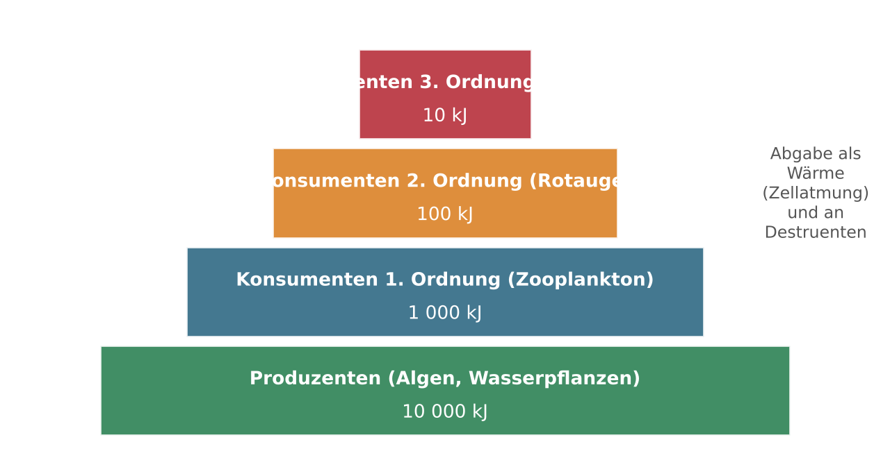

So nutzen Sie die Hilfen: Versuchen Sie es erst allein. Öffnen Sie dann Hilfe 1, danach Hilfe 2. Die Lösung dient zur Kontrolle – vergleichen Sie sie mit Ihrer eigenen Antwort und verbessern Sie diese im Hefter oder im PDF.
Aufgabe 1: Das Nahrungsnetz im See
- Stellen Sie aus Abb. 1 zwei Nahrungsketten mit je vier Gliedern dar und benennen Sie die Trophieebenen!
- Erklären Sie, warum ein Nahrungsnetz die Wirklichkeit besser beschreibt als eine Nahrungskette!
- Erläutern Sie die Bedeutung der Destruenten für das Ökosystem See!
Hilfe 1
a) Beginnen Sie immer mit einem Produzenten und folgen Sie den Pfeilen. c) Was würde passieren, wenn tote Algen und Fische nicht abgebaut würden?
Hilfe 2
c) Destruenten schließen den Stoffkreislauf: Sie machen Mineralstoffe wieder verfügbar.
Lösung (erst nach eigenem Versuch öffnen!)
a) z. B. Algen (Produzent) → Wasserfloh (Konsument 1. Ordnung) → Rotfeder (Konsument 2. Ordnung) → Hecht (Konsument 3. Ordnung); Algen → Wasserfloh → Großlibellenlarve → Teichralle bzw. Graureiher. Andere Ketten sind richtig, wenn sie den Pfeilen in Abb. 1 folgen.
b) Die meisten Tiere fressen mehrere Arten und werden von mehreren Arten gefressen; die Ketten sind miteinander verknüpft. Fällt eine Art aus, können Fresser auf andere Nahrung ausweichen – das Netz zeigt diese Zusammenhänge.
c) Destruenten bauen tote Biomasse, Kot und Laub zu anorganischen Stoffen ab (Mineralisierung). Dadurch werden Mineralstoffe wie Phosphat und Nitrat sowie CO₂ wieder frei und können von den Produzenten erneut genutzt werden. Ohne Destruenten würden sich tote Stoffe anhäufen und die Stoffkreisläufe kämen zum Erliegen.
b) Die meisten Tiere fressen mehrere Arten und werden von mehreren Arten gefressen; die Ketten sind miteinander verknüpft. Fällt eine Art aus, können Fresser auf andere Nahrung ausweichen – das Netz zeigt diese Zusammenhänge.
c) Destruenten bauen tote Biomasse, Kot und Laub zu anorganischen Stoffen ab (Mineralisierung). Dadurch werden Mineralstoffe wie Phosphat und Nitrat sowie CO₂ wieder frei und können von den Produzenten erneut genutzt werden. Ohne Destruenten würden sich tote Stoffe anhäufen und die Stoffkreisläufe kämen zum Erliegen.
Aufgabe 2: Die Energiepyramide
- Berechnen Sie die fehlenden Energiewerte in Abb. 3 mit der 10-%-Regel!
- Erklären Sie mithilfe von Abb. 2, wo die „fehlende“ Energie auf jeder Stufe bleibt!
- Begründen Sie, warum es im See viel weniger Hechte als Rotaugen gibt und warum Nahrungsketten selten mehr als vier bis fünf Glieder haben!
- Begründen Sie aus Sicht des Energieflusses, warum mit einer überwiegend pflanzlichen Ernährung mehr Menschen ernährt werden können als mit einer fleischreichen!
Hilfe 1
a) 10 % von 10 000 kJ … b) Was tut ein Wasserfloh mit der Energie aus den Algen? Frisst er die Algen vollständig?
Hilfe 2
c) Auf der obersten Ebene steht nur noch sehr wenig Energie zur Verfügung. d) Bei Fleisch ist eine zusätzliche Trophieebene zwischengeschaltet.
Lösung (erst nach eigenem Versuch öffnen!)
a) K1: 1 000 kJ, K2: 100 kJ, K3: 10 kJ.
b) Ein großer Teil der aufgenommenen Energie wird in der Zellatmung für Bewegung, Wachstum und Erhaltung der Körpertemperatur verbraucht und als Wärme abgegeben. Ein weiterer Teil wird nicht gefressen oder nicht verdaut (Kot) und gelangt mit toter Biomasse zu den Destruenten.
c) Auf jeder Ebene stehen nur ca. 10 % der Energie der vorherigen Ebene zur Verfügung. Für die Hechte auf der höchsten Ebene bleibt so wenig Energie, dass nur wenige Individuen ernährt werden können. Nach vier bis fünf Stufen reicht die Energie nicht mehr für eine weitere Ebene.
d) Isst der Mensch Pflanzen, steht er auf der 2. Trophieebene und erhält etwa 10 % der Energie der Pflanzen. Isst er Fleisch von Tieren, die Pflanzen gefressen haben, erhält er nur etwa 1 %. Für dieselbe Energiemenge wird bei Fleischkost etwa die zehnfache Anbaufläche benötigt.
b) Ein großer Teil der aufgenommenen Energie wird in der Zellatmung für Bewegung, Wachstum und Erhaltung der Körpertemperatur verbraucht und als Wärme abgegeben. Ein weiterer Teil wird nicht gefressen oder nicht verdaut (Kot) und gelangt mit toter Biomasse zu den Destruenten.
c) Auf jeder Ebene stehen nur ca. 10 % der Energie der vorherigen Ebene zur Verfügung. Für die Hechte auf der höchsten Ebene bleibt so wenig Energie, dass nur wenige Individuen ernährt werden können. Nach vier bis fünf Stufen reicht die Energie nicht mehr für eine weitere Ebene.
d) Isst der Mensch Pflanzen, steht er auf der 2. Trophieebene und erhält etwa 10 % der Energie der Pflanzen. Isst er Fleisch von Tieren, die Pflanzen gefressen haben, erhält er nur etwa 1 %. Für dieselbe Energiemenge wird bei Fleischkost etwa die zehnfache Anbaufläche benötigt.

Basiswissen: Zellatmung
- Geben Sie die Bruttogleichung der Zellatmung und den Ort in der Zelle an und erklären Sie, warum Destruenten beim Abbau toter Biomasse Sauerstoff verbrauchen!
Hilfe 1
Zellatmung ist die „Umkehrung“ der Fotosynthese.
Hilfe 2
Destruenten bauen organische Stoffe für ihren eigenen Energiebedarf ab – wie alle Lebewesen.
Lösung (erst nach eigenem Versuch öffnen!)
C₆H₁₂O₆ + 6 O₂ ⟶ 6 CO₂ + 6 H₂O; exotherm (die Energie wird als ATP nutzbar); bei Eukaryoten in den Mitochondrien. Destruenten (aerobe Bakterien und Pilze) nutzen die organischen Stoffe der toten Biomasse als Energiequelle und bauen sie durch Zellatmung ab – dabei verbrauchen sie Sauerstoff.
Aufgabe 3: Der See im Sommer
- Beschreiben Sie mithilfe von Abb. 5 das Temperatur- und das Sauerstoffprofil des Sees während der Sommerstagnation und der Vollzirkulation!
- Erklären Sie, warum das Tiefenwasser eines nährstoffreichen Sees im Sommer kaum Sauerstoff enthält!
- Erklären Sie die Bedeutung der Vollzirkulation im Frühjahr und Herbst für die Lebewesen im See!
Hilfe 1
b) Zwei Gründe: Woher kommt in der Tiefe kein Sauerstoff nach? Wer verbraucht dort Sauerstoff?
Hilfe 2
b) Kein Licht → keine Fotosynthese; Sprungschicht → keine Durchmischung; tote Algen sinken ab → Destruenten veratmen sie.
Lösung (erst nach eigenem Versuch öffnen!)
a) Sommerstagnation: Das Oberflächenwasser ist warm (über 20 °C) und sauerstoffreich; in der Sprungschicht fällt die Temperatur rasch ab; das Tiefenwasser ist kalt (ca. 4 °C), der Sauerstoffgehalt nimmt dort stark ab. Vollzirkulation: Im ganzen See herrscht die gleiche Temperatur (ca. 4 °C), auch der Sauerstoffgehalt ist von oben bis unten nahezu gleich.
b) In der Tiefe ist es zu dunkel für Fotosynthese, es wird kein Sauerstoff produziert. Wegen der Schichtung gelangt auch kein sauerstoffreiches Oberflächenwasser nach unten. Gleichzeitig sinken abgestorbene Algen und andere Biomasse ab und werden von Destruenten unter Sauerstoffverbrauch abgebaut (Zellatmung).
c) Bei der Vollzirkulation wird der ganze See durchmischt: Sauerstoff gelangt in die Tiefe – Tiere am Grund können wieder leben, Destruenten wieder aerob abbauen. Gleichzeitig werden die am Grund freigesetzten Mineralstoffe (Phosphat, Nitrat) nach oben transportiert, wo sie den Produzenten für das Wachstum im Frühjahr zur Verfügung stehen.
b) In der Tiefe ist es zu dunkel für Fotosynthese, es wird kein Sauerstoff produziert. Wegen der Schichtung gelangt auch kein sauerstoffreiches Oberflächenwasser nach unten. Gleichzeitig sinken abgestorbene Algen und andere Biomasse ab und werden von Destruenten unter Sauerstoffverbrauch abgebaut (Zellatmung).
c) Bei der Vollzirkulation wird der ganze See durchmischt: Sauerstoff gelangt in die Tiefe – Tiere am Grund können wieder leben, Destruenten wieder aerob abbauen. Gleichzeitig werden die am Grund freigesetzten Mineralstoffe (Phosphat, Nitrat) nach oben transportiert, wo sie den Produzenten für das Wachstum im Frühjahr zur Verfügung stehen.
Aufgabe 4: Neobiota
- Erklären Sie die Begriffe Neophyt und Neozoon an je einem Beispiel!
- Erklären Sie, warum der Signalkrebs (Gutachten) den heimischen Edelkrebs verdrängt hat!
- Am Ufer des Steinbachs wächst Riesen-Bärenklau, Kinder spielen dort gern mit den hohlen Stängeln. Beurteilen Sie die Gefahr und leiten Sie Maßnahmen für das Amt ab!
- Erläutern Sie, warum invasive Neobiota die Biodiversität eines Gewässers verringern können und warum ein artenreiches Ökosystem stabiler ist!
Hilfe 1
b) Zwei Gründe: Krankheit und Konkurrenz. Wer erkrankt an der Krebspest? c) Was passiert, wenn Pflanzensaft auf die Haut gelangt und die Sonne scheint? d) Welche Ebenen der Biodiversität gibt es? Was fehlt einer eingeschleppten Art im neuen Gebiet?
Hilfe 2
c) Denken Sie an Warnschilder, Entfernung mit Schutzkleidung, Erste Hilfe (Haut waschen, Sonne meiden, Arzt). d) Ohne Fressfeinde, Parasiten und Konkurrenten vermehrt sich die neue Art stark und besetzt die Nische heimischer Arten.
Lösung (erst nach eigenem Versuch öffnen!)
a) Neophyt: Pflanze, die nach 1492 durch den Menschen eingeführt wurde, z. B. Kanadische Wasserpest, Riesen-Bärenklau. Neozoon: entsprechend eingeführtes Tier, z. B. Signalkrebs, Waschbär.
b) Der Signalkrebs überträgt die Krebspest, an der er selbst kaum erkrankt, die für den Edelkrebs aber tödlich ist. Zudem konkurrieren beide Arten um die gleichen Ressourcen (Nahrung, Verstecke) – nach dem Konkurrenzausschlussprinzip setzt sich die widerstandsfähigere, sich schneller vermehrende Art durch.
c) Die Gefahr ist groß: Der Pflanzensaft macht die Haut lichtempfindlich; mit Sonnenlicht entstehen schmerzhafte, verbrennungsähnliche Blasen, die lange heilen und Narben hinterlassen können. Maßnahmen: Warnschilder aufstellen, Eltern informieren, Pflanzen mit Schutzkleidung (Handschuhe, Schutzbrille, bedeckte Haut) entfernen (Wurzel ausstechen, Blütenstände vor der Samenreife abschneiden und entsorgen). Bei Hautkontakt: Stelle sofort mit Wasser und Seife waschen, Sonnenlicht meiden, bei Beschwerden zum Arzt.
d) Invasive Neobiota haben im neuen Gebiet oft keine Fressfeinde, Parasiten oder Krankheiten und vermehren sich stark. Sie verdrängen heimische Arten mit ähnlicher Nische durch Konkurrenz oder übertragen Krankheiten (Signalkrebs – Krebspest). Dadurch sinken Artenvielfalt und genetische Vielfalt. In einem artenreichen Ökosystem gibt es viele Nahrungsbeziehungen; fällt eine Art aus, können andere ihre Rolle übernehmen – das Nahrungsnetz bleibt stabil.
b) Der Signalkrebs überträgt die Krebspest, an der er selbst kaum erkrankt, die für den Edelkrebs aber tödlich ist. Zudem konkurrieren beide Arten um die gleichen Ressourcen (Nahrung, Verstecke) – nach dem Konkurrenzausschlussprinzip setzt sich die widerstandsfähigere, sich schneller vermehrende Art durch.
c) Die Gefahr ist groß: Der Pflanzensaft macht die Haut lichtempfindlich; mit Sonnenlicht entstehen schmerzhafte, verbrennungsähnliche Blasen, die lange heilen und Narben hinterlassen können. Maßnahmen: Warnschilder aufstellen, Eltern informieren, Pflanzen mit Schutzkleidung (Handschuhe, Schutzbrille, bedeckte Haut) entfernen (Wurzel ausstechen, Blütenstände vor der Samenreife abschneiden und entsorgen). Bei Hautkontakt: Stelle sofort mit Wasser und Seife waschen, Sonnenlicht meiden, bei Beschwerden zum Arzt.
d) Invasive Neobiota haben im neuen Gebiet oft keine Fressfeinde, Parasiten oder Krankheiten und vermehren sich stark. Sie verdrängen heimische Arten mit ähnlicher Nische durch Konkurrenz oder übertragen Krankheiten (Signalkrebs – Krebspest). Dadurch sinken Artenvielfalt und genetische Vielfalt. In einem artenreichen Ökosystem gibt es viele Nahrungsbeziehungen; fällt eine Art aus, können andere ihre Rolle übernehmen – das Nahrungsnetz bleibt stabil.
Wahlaufgabe W1: Ein See verlandet
- Beschreiben Sie die Verlandung eines Sees als Sukzession und erklären Sie, welche Rolle die Destruenten dabei spielen!
Hilfe 1
Was passiert mit abgestorbenen Pflanzen, wenn am Grund kaum Sauerstoff vorhanden ist?
Hilfe 2
Ohne Sauerstoff bauen Destruenten nur unvollständig ab – Schlamm und Torf entstehen.
Lösung (erst nach eigenem Versuch öffnen!)
Durch abgestorbene Pflanzenteile, die sich am Grund ablagern, wird der See flacher. Die Pflanzengürtel der Uferzone rücken nach innen vor, die Lebensgemeinschaften lösen sich in einer gerichteten Abfolge ab (Wasserpflanzen → Röhricht → Flachmoor → Bruchwald). Am sauerstoffarmen Grund bauen die Destruenten die tote Biomasse nur unvollständig ab; es bilden sich Faulschlamm und Torf, die die Verlandung beschleunigen.
Wahlaufgabe W2: Die Quagga-Muschel im Bodensee
- Erklären Sie die Auswirkungen der Quagga-Muschel mithilfe des Nahrungsnetzes!
- Beurteilen Sie die Aussage: „Klares Wasser ist immer ein Zeichen für einen gesunden See.“!
Hilfe 1
Was fressen die Muscheln – und was fehlt dann anderen Konsumenten?
Hilfe 2
Wenig Plankton bedeutet klares Wasser, aber auch wenig Nahrung.
Lösung (erst nach eigenem Versuch öffnen!)
a) Die Muscheln filtern große Mengen Phyto- und Zooplankton aus dem Wasser. Dadurch fehlt den Felchen und anderen Planktonfressern Nahrung; sie wachsen langsamer, die Fischerei leidet. Die Muschel ist ein starker Konkurrent der heimischen Planktonfresser; als invasives Neozoon verändert sie das gesamte Nahrungsnetz.
b) Die Aussage ist zu einfach: Klares Wasser kann auf geringe Nährstoffbelastung hinweisen, im Bodensee ist es aber Folge der massenhaften Filtration durch eine invasive Art. Für einen gesunden See zählen auch ein funktionierendes Nahrungsnetz und eine hohe Biodiversität.
b) Die Aussage ist zu einfach: Klares Wasser kann auf geringe Nährstoffbelastung hinweisen, im Bodensee ist es aber Folge der massenhaften Filtration durch eine invasive Art. Für einen gesunden See zählen auch ein funktionierendes Nahrungsnetz und eine hohe Biodiversität.
Wahlaufgabe W3: Biomasse oder Individuenzahl?
- Zeichnen Sie für dieses Beispiel eine Zahlenpyramide und eine Biomassepyramide (Heft) und erklären Sie, warum sich die Formen unterscheiden!
- Abb. 6 zeigt Biomassepyramiden für einen Wald und für den Ozean. Erklären Sie, warum im Ozean die Biomasse der Konsumenten 1. Ordnung größer sein kann als die der Produzenten (Phytoplankton)!
Hilfe 1
Wie viele Individuen gibt es auf jeder Ebene, wie groß ist ihre Masse? b) Wie schnell vermehrt sich Phytoplankton, und wie gut ist es verdaulich – verglichen mit Holz?
Hilfe 2
Eine einzige Eiche hat eine riesige Biomasse. b) Die Pyramide zeigt den Bestand zu einem Zeitpunkt, nicht die Produktion pro Jahr.
Lösung (erst nach eigenem Versuch öffnen!)
Zahlenpyramide: unten nur 1 Eiche, darüber Tausende Raupen, darüber Hunderte Schlupfwespen – die Pyramide ist unten schmal (teilweise umgekehrt). Biomassepyramide: Die Eiche hat eine sehr große Biomasse, die Raupen eine viel kleinere, die Schlupfwespen eine noch kleinere – die Pyramide hat die typische Form. Die Zahlenpyramide berücksichtigt nicht die unterschiedliche Größe der Lebewesen; für den Energiefluss ist die Biomasse (bzw. Energie) aussagekräftiger.
b) Eine Biomassepyramide zeigt den Bestand zu einem Zeitpunkt. Phytoplankton vermehrt sich sehr schnell und wird fast vollständig und sofort gefressen; es ist leicht verdaulich (kaum Cellulose). Der kleine Bestand an Produzenten wird also ständig nachgebildet und liefert über das Jahr sehr viel Biomasse und Energie. Die Konsumenten (Zooplankton) leben länger und speichern die Biomasse. Im Wald dagegen ist der Großteil der Produzenten-Biomasse Holz, das langsam wächst, schwer verdaulich ist und kaum gefressen wird. Die Energiepyramide (Produktion pro Jahr) ist dagegen auch im Ozean nie umgekehrt.
b) Eine Biomassepyramide zeigt den Bestand zu einem Zeitpunkt. Phytoplankton vermehrt sich sehr schnell und wird fast vollständig und sofort gefressen; es ist leicht verdaulich (kaum Cellulose). Der kleine Bestand an Produzenten wird also ständig nachgebildet und liefert über das Jahr sehr viel Biomasse und Energie. Die Konsumenten (Zooplankton) leben länger und speichern die Biomasse. Im Wald dagegen ist der Großteil der Produzenten-Biomasse Holz, das langsam wächst, schwer verdaulich ist und kaum gefressen wird. Die Energiepyramide (Produktion pro Jahr) ist dagegen auch im Ozean nie umgekehrt.
Wahlaufgabe W4: Abituraufgabe: Der Waschbär – unser Nachbar
- Ordnen Sie den Waschbären begründet einer Trophieebene zu!
- Beschreiben Sie die Veränderungen der Nahrung im Jahresverlauf (Abb. 7) und erklären Sie sie! Leiten Sie einen Vorteil des breiten Nahrungsspektrums ab!
- Stellen Sie den Entwicklungszyklus des Waschbärspulwurms als beschriftetes Kreisschema dar (Heft) und ordnen Sie die Begriffe Endwirt und Zwischenwirt zu! Erklären Sie, warum der Mensch als Fehlwirt bezeichnet wird!
- Erklären Sie, warum sich der Waschbär als Neozoon in Städten so stark vermehren konnte, und beurteilen Sie, welche der empfohlenen Maßnahmen am wirksamsten ist!
Hilfe 1
a) Frisst der Waschbär nur Pflanzen, nur Tiere oder beides? b) Wann reifen Früchte? Was machen wechselwarme Wirbellose im Winter? c) In welchem Tier pflanzt sich der Wurm fort, in welchem lebt nur die Larve?
Hilfe 2
b) Frühling: kaum Früchte, viele aktive Beutetiere; Herbst: reife Nüsse und Beeren; Winter: Wirbellose in Kältestarre sind leicht auszugraben. d) Was bestimmt die Umweltkapazität eines Lebensraums? Was fehlt einem Neozoon oft?
Lösung (erst nach eigenem Versuch öffnen!)
a) Der Waschbär frisst Pflanzen (Konsument 1. Ordnung) und Tiere (Konsument 2. oder höherer Ordnung). Er ist ein Allesfresser – eine eindeutige Zuordnung zu einer Trophieebene ist nicht möglich.
b) Frühling: 91 % tierische Nahrung – Früchte sind noch nicht reif, Beutetiere sind nach dem Winter aktiv und zahlreich. Sommer und Herbst: Der Anteil pflanzlicher Nahrung steigt auf 31 % bzw. 51 % – Beeren, Nüsse und Mais reifen; sie sind energiereich und leicht zu bekommen. Winter: 69 % Wirbellose – sie sind in Kältestarre und leicht auszugraben; Wirbeltiere sind versteckt, Früchte selten. Vorteil: Der Waschbär findet zu jeder Jahreszeit und in vielen Lebensräumen Nahrung; fällt eine Nahrungsquelle weg, weicht er auf eine andere aus.
c) Kreisschema: erwachsene Würmer im Dünndarm des Waschbären (geschlechtliche Fortpflanzung) → Eier mit dem Kot in die Umwelt → Aufnahme durch Kleinsäuger oder Vögel → Larven durchbohren die Darmwand und wandern in Gewebe und Organe → Waschbär frisst das befallene Tier → Larven werden zu erwachsenen Würmern. Endwirt: Waschbär; Zwischenwirt: Kleinsäuger, Vögel. Der Mensch ist Fehlwirt: Der Wurm kann sich in ihm nicht zu Ende entwickeln und nicht weitergegeben werden (Sackgasse), die wandernden Larven schädigen ihn trotzdem.
d) In Städten gibt es reichlich Nahrung und Unterschlupf, es ist wärmer, es wird nicht gejagt, und der Waschbär hat keine natürlichen Fressfeinde – die Umweltkapazität ist hoch. Am wirksamsten sind Maßnahmen, die die Nahrung verringern (Fütterungsverbot, gesicherte Mülltonnen, Fallobst aufsammeln), weil sie die Umweltkapazität senken; verschlossene Schlupflöcher verringern zusätzlich den Unterschlupf. Begründetes Fazit.
b) Frühling: 91 % tierische Nahrung – Früchte sind noch nicht reif, Beutetiere sind nach dem Winter aktiv und zahlreich. Sommer und Herbst: Der Anteil pflanzlicher Nahrung steigt auf 31 % bzw. 51 % – Beeren, Nüsse und Mais reifen; sie sind energiereich und leicht zu bekommen. Winter: 69 % Wirbellose – sie sind in Kältestarre und leicht auszugraben; Wirbeltiere sind versteckt, Früchte selten. Vorteil: Der Waschbär findet zu jeder Jahreszeit und in vielen Lebensräumen Nahrung; fällt eine Nahrungsquelle weg, weicht er auf eine andere aus.
c) Kreisschema: erwachsene Würmer im Dünndarm des Waschbären (geschlechtliche Fortpflanzung) → Eier mit dem Kot in die Umwelt → Aufnahme durch Kleinsäuger oder Vögel → Larven durchbohren die Darmwand und wandern in Gewebe und Organe → Waschbär frisst das befallene Tier → Larven werden zu erwachsenen Würmern. Endwirt: Waschbär; Zwischenwirt: Kleinsäuger, Vögel. Der Mensch ist Fehlwirt: Der Wurm kann sich in ihm nicht zu Ende entwickeln und nicht weitergegeben werden (Sackgasse), die wandernden Larven schädigen ihn trotzdem.
d) In Städten gibt es reichlich Nahrung und Unterschlupf, es ist wärmer, es wird nicht gejagt, und der Waschbär hat keine natürlichen Fressfeinde – die Umweltkapazität ist hoch. Am wirksamsten sind Maßnahmen, die die Nahrung verringern (Fütterungsverbot, gesicherte Mülltonnen, Fallobst aufsammeln), weil sie die Umweltkapazität senken; verschlossene Schlupflöcher verringern zusätzlich den Unterschlupf. Begründetes Fazit.
Sichern: Fachsprache und Denkfallen
Erst selbst erklären, dann kontrollieren. Übernehmen Sie die Begriffe in Ihr Glossar.
Fachbegriffe: Kontrollieren Sie Ihre Erklärungen mit der Übung „Fachbegriffe zuordnen – Kontrolle Modul 7“ im mebis-Kurs.
Lösung: Denkfallen
- „Energie wird im Ökosystem wie Stoffe im Kreislauf wiederverwertet.“ – falsch – Stoffe kreisen, Energie fließt nur in eine Richtung und wird schließlich als Wärme abgegeben. Ökosysteme brauchen ständig Sonnenenergie.
- „Der Hecht ist schädlich für den See, weil er Fische frisst.“ – falsch – Als Endkonsument reguliert der Hecht die Bestände der Friedfische; davon profitieren Wasserflöhe und damit die Wasserqualität.
- „Alle Neobiota sind schädlich und sollten bekämpft werden.“ – falsch – Die meisten Neobiota sind unauffällig; nur einige sind invasiv und verursachen Schäden. Maßnahmen richten sich gegen diese Arten.
Gutachten · Befund Kapitel 7
Ein Sommer am Steinbachsee – Kapitel 7: „Hechte gegen Algen?“
- Stellen Sie die Nahrungskette dar, auf der der Vorschlag der Biologin beruht, und erklären Sie, warum Hechte die Algen indirekt verringern können!
- Erklären Sie dem Angelverein, warum es viel weniger Hechte als Rotaugen gibt!
- Erläutern Sie, welche Folgen der Fund der Signalkrebse für die Biodiversität des Steinbachs haben kann!
Tipp
Lesen Sie das Kapitel 7 des Gutachtens noch einmal und suchen Sie in den Pflichtaufgaben dieses Moduls die passenden Fachbegriffe.
Lösung (erst nach eigenem Versuch öffnen!)
- Algen → Wasserflöhe → Rotaugen → Hecht. Mehr Hechte fressen mehr Rotaugen; weniger Rotaugen fressen weniger Wasserflöhe; mehr Wasserflöhe filtrieren mehr Algen aus dem Wasser – das Wasser wird klarer (Biomanipulation). Die Maßnahme wirkt aber nur, solange die Nährstoffzufuhr nicht zu hoch ist.
- Von Ebene zu Ebene gelangen nur etwa 10 % der Energie weiter; der Rest wird in der Zellatmung als Wärme abgegeben oder geht an die Destruenten. Für die Hechte auf der obersten Ebene steht deshalb nur sehr wenig Energie zur Verfügung – es können nur wenige Hechte leben.
- Der Signalkrebs ist ein invasives Neozoon. Er überträgt die Krebspest und verdrängt den heimischen Edelkrebs; die Artenvielfalt sinkt. Die Signalkrebse sollten gemeldet werden; ein Besatz mit Edelkrebsen ist erst sinnvoll, wenn keine Signalkrebse mehr vorkommen.